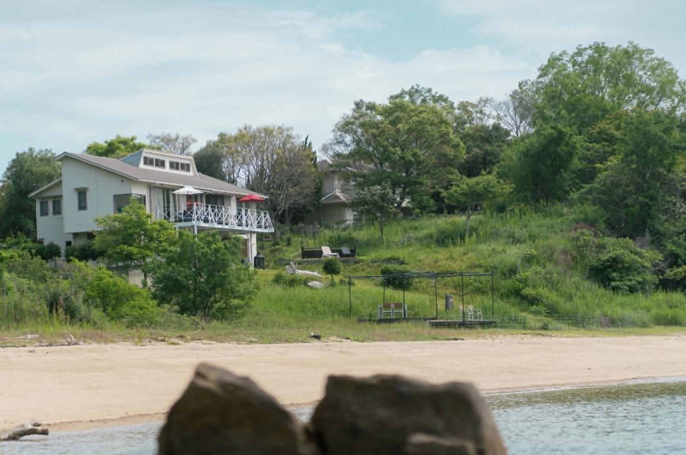
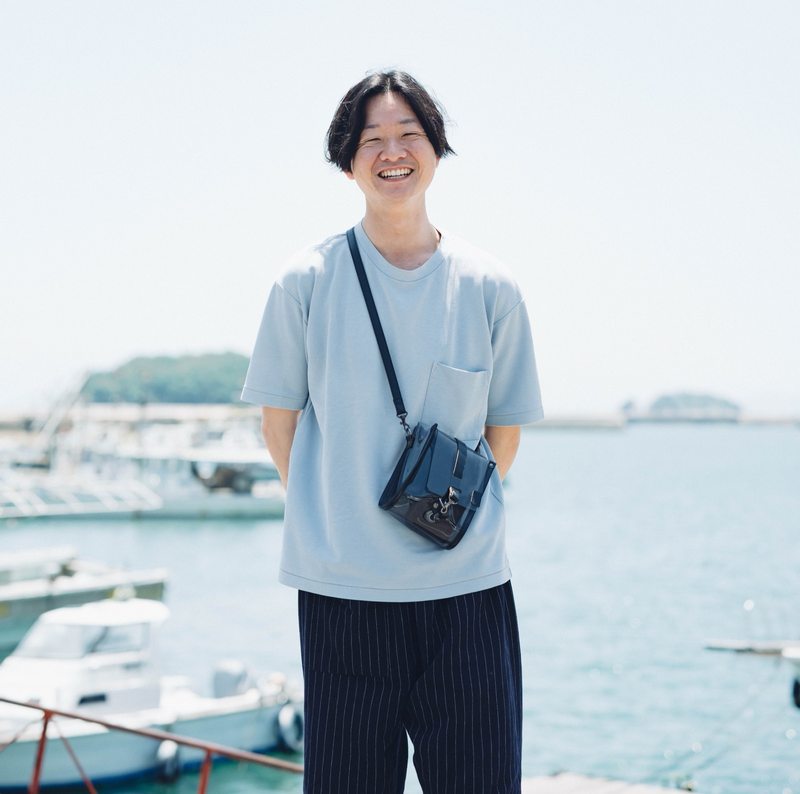
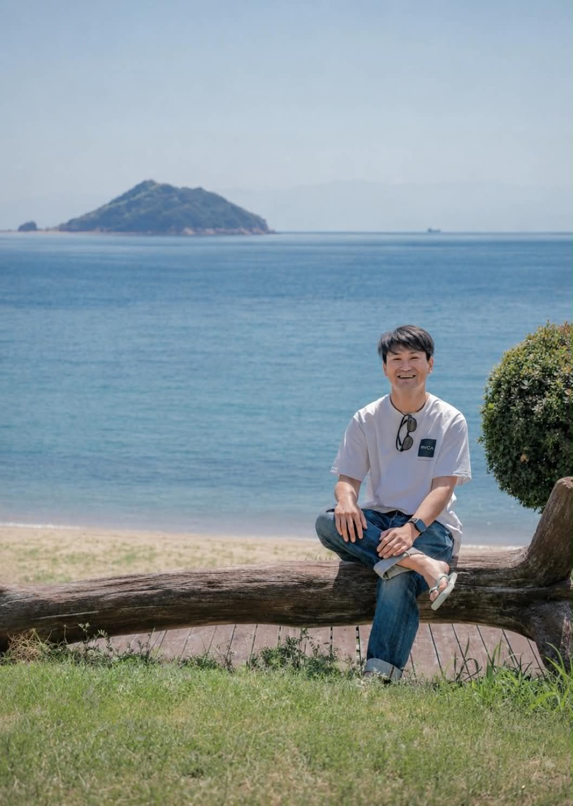
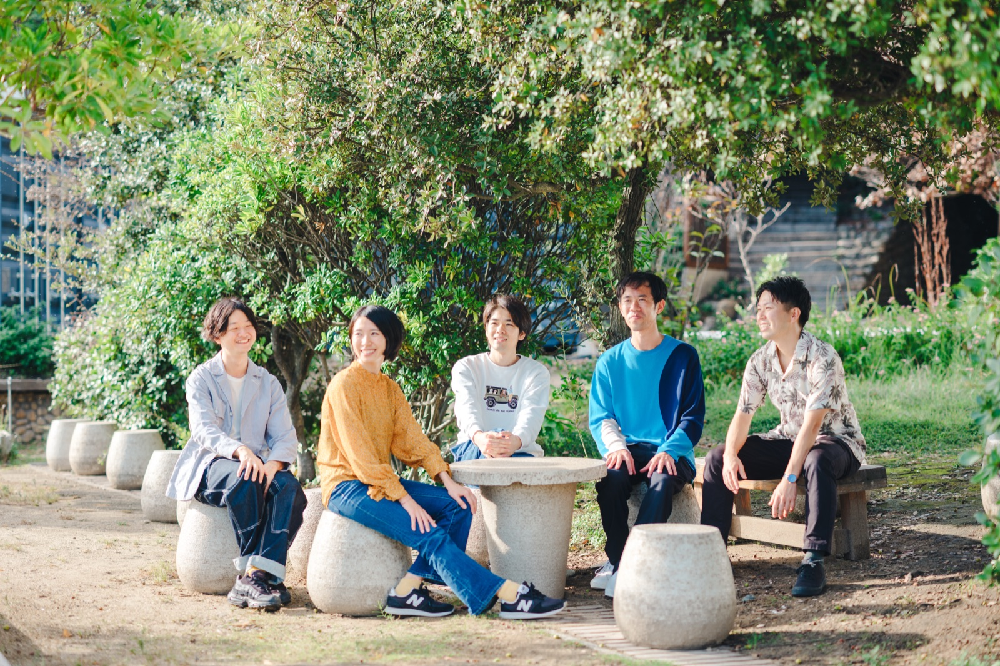

20〜30代の方へ POOLO × KOTOGURASHI
鞆の浦・走島で、さまざまな働き方と生き方に触れる1泊2日の暮らし観光。転職でも、スキルアップでもなく、誰かの暮らしのそばで、自分のこれからを考えてみる旅です。

11.21土–22日
今の仕事が嫌なわけではない。でも「このままでいいのかな」と感じることが、少しずつ増えてきた。
大きな不満があるわけではない。だからこそ、誰かに相談するほどのことでもない気がしてしまう。
やりたいことは、なんとなくある。けれど、動き出すほどの確信がまだない。
「もう少し考えてから」と思っているうちに、また同じ季節が巡ってくる。
ひとりで考えていると、いつも同じところをぐるぐるしてしまう。
自己分析はやってみた。本も読んだ。それでも、答えらしいものはまだ出てこない。
これからのキャリアを考えるとき、多くの人は転職サイトを開いたり、自己分析のシートを埋めたりします。それも、もちろん有効な方法のひとつです。
ただ、しかし。
「どんな仕事をするか」だけを考えていても、答えが出ないことがあります。どんな場所で暮らしたいのか。どんな働き方をしたいのか。何を大切にして生きたいのか。そこまで含めて、はじめて「これから」の話になる。
今回の旅で大切にしたいのは、誰かの暮らしや人生の歩み方から、自分のキャリアを考えることです。この旅は、答えを決めるためのものではありません。自分がこれから考えていきたい問いと、小さな次の一歩を持ち帰るための旅です。

鞆の浦は、広島県福山市の南端にある港町。江戸時代の港のかたちが今も残る、瀬戸内海に面したまちです。
けれど、理由は景色ではありません。
このまちには、東京から移住してきた人、家業を継いだ人、地元で店を開いた人が、それぞれの理由で暮らしています。そして何より、その人たちに実際に会いにいける距離感がある。まちを歩けば、話しかけられる。商店の人と立ち話が始まる。そういうまちです。
鞆の浦から船で20分ほど沖には、走島（はしりじま）という小さな島。今回はこの島にも渡って一泊します。まちと、島。ふたつの場所で、違う選択をした人たちの人生に触れる。だから、鞆の浦・走島を選びました。
有名な観光名所を巡るだけでなく、その土地で暮らす人や日常のほうに触れる旅を、共催する合同会社コト暮らしは「暮らし観光」と呼んでいます。今回の1泊2日も、この考え方に沿って組み立てています。
旅の前と後にオンラインで集まる、3つのステップでひとつの体験として設計しています。
長田涼さんから、暮らし観光とは何か、鞆の浦とはどんなまちなのかを聞きます。そして「今回の旅で、自分は何について考えてみたいだろう？」——旅のテーマや問いを、ひとつ持って出発します。
まちを歩き、人に会い、話を聞く。船で島へ渡り、島の時間のなかでもう一度考える。参加者同士で話す時間と、ひとりで考える余白の、両方を置いた2日間です。
帰ったあと、もう一度オンラインで集まります。何が印象に残ったのか。誰の言葉が残っているのか。旅で得た気づきを、日常へつなげるところまでをプログラムに含めます。
Point01
キャリア講師から正解を教えてもらうのではありません。実際にその土地で人生を営んでいる人から、直接、話を聞きます。
Point02
有名なスポットを巡るだけではありません。商店、路地、人との会話。その土地の日常のほうへ入っていきます。
Point03
人の話を聞いて終わりにはしません。「自分だったら、どうだろう？」——そこまで、参加者同士で話しながら考えます。
Point04
島での自由時間、朝のジャーナリング。予定は詰め込みません。人と話す時間と、ひとりで考える時間の両方をつくります。
それぞれ違う道を通って、いまこの土地で暮らし、働いている3人です。

合同会社コト暮らし 共同代表
1991年、京都生まれ。ユニクロ、IT企業などを経て、2022年に東京から鞆の浦へ移住。2023年に夫婦で「コト暮らし」を設立し、鞆の浦「暮らし観光」の事業に取り組む。2025年に『ともたち』を出版。
リモートワーク、パン屋、子育て、地域での活動。複数の営みを組み合わせながら暮らす長田さんに、なぜ移住したのか、何を大切に働いているのかを聞きます。

漁師／一棟貸ホテル「バケーションレンタルホテルKAI」
1988年、走島生まれ。大阪・福山で製造業や食品営業などを経験し、30歳を機に脱サラして生まれ故郷の走島へ。2022年11月に一棟貸ホテル「KAI」を開業しました。
家業、島での仕事、地域との関わり。「地域で生きる」という選択について聞きます。今回の宿泊先も、濱上さんが営むこのKAIです。
niki yoga 主宰／ヨガインストラクター
鞆出身のヨガインストラクター。人を元気にする明るいキャラクターと、独自の世界観を持っているのが魅力です。2024年にヨガスタジオ「niki -間-」を開業しました。
2日目にスタジオを訪ね、地域で仕事をつくること、キャリア、地域との関わりについて話を聞きます。[要確認：詳細プロフィール・スタジオのWebサイトURL]

集合から解散まで。予定を詰め込みすぎず、考える余白を挟みながら進みます。集合・解散の時刻は下の日付見出しのとおりです。［各プログラムの詳細な時刻は[要確認：後日確定]］
12:30
鞆の浦「ありそろう」に集合。旅で考えてみたいテーマを、参加者同士で共有するところから始めます。
午後
複数の営みを組み合わせながら暮らす長田さんの、これまでと現在地を聞きます。
午後
商店、路地、日常の風景を歩きながら「鞆の浦で暮らす」ということに触れます。偶然の出会いや寄り道も、大切に。
夕方
鞆の浦から船に乗って、20分ほど。走島へ移動します。
夕方
家業、島での仕事、これまでの人生を通して「地域で生きる」という選択に触れます。
夕方
海辺を歩く。ひとりで考える。ぼーっとする。そうした余白も、大切なプログラムです。
夜
みんなで食事を囲みながら、一日を振り返ります。宿泊は、走島の一棟貸しの宿「KAI」。
朝
前日に感じたこと、心に残った言葉、生まれた問いを書き出します。
朝
午前
午前
西原由弥佳さんのスタジオ「niki -間-」へ。地域で仕事をつくることについて話を聞きます。
昼
1日目とは少し違う視点で。今度は、自分のなかに生まれた問いを持って。
昼
少人数に分かれて、それぞれ気になった場所へ。
午後
個人ワーク → 3〜4人での対話 → 全員で共有。感じたことを自分の言葉にしていきます。
16:00
この2日間で「理想のキャリアが決まる」とも「やりたいことが見つかる」とも、お約束はしません。目指しているのは、もう少し手前の変化です。
知らない働き方・暮らし方・価値観に触れることで、自分がこれから考えたいことの輪郭が少し見え、小さな次の一歩を持って日常に戻る。そこまでを、この旅のゴールにしています。
＊申込締切：2026年10月30日（金）
プログラムの参加費と、現地でお支払いいただく実費は分かれています。
事前オンライン・現地1泊2日・事後オンラインを含む、プログラム参加費です。
POOLOの各コースに在籍中の方の参加費です。
［卒業生の扱いは[要確認]］
宿泊（走島の一棟貸し「KAI」）・夕食・朝食など。参加費とは別に、現地で回収します。
＊このほか、鞆の浦までの往復交通費は各自でご負担ください。
Q.一人で参加しても大丈夫ですか？
はい。おひとりでの参加を想定しています。初日の自己紹介から、参加者同士で話す時間を丁寧に置いていますので、初対面の方ばかりでも大丈夫です。
Q.POOLOに参加したことがなくても参加できますか？
はい。一般参加が可能です。POOLOに関わったことがない方も歓迎しています。
Q.20代・30代以外でも参加できますか？
はい。主な対象は旅が好きな20〜30代ですが、年齢の制限は設けていません。
Q.キャリアについて明確な悩みがなくても参加できますか？
はい。むしろ「はっきりした悩みではないけれど、なんとなく考えたい」という方を想定しています。悩みを整理してから来る必要はありません。
Q.宿泊はどのような形ですか？
走島にある一棟貸しの宿「バケーションレンタルホテルKAI」に、参加者全員で宿泊します。部屋割り（相部屋／個室）や持ち物については[要確認：後日ご案内]。
Q.現地まではどうやって行けばいいですか？
[要確認：鞆の浦へのおすすめのアクセス（最寄り駅・所要時間・推奨の到着便）を追記します]
Q.雨天の場合はどうなりますか？
[要確認：雨天時のプログラム変更・船の欠航時の対応を追記します]
Q.キャンセルした場合は返金されますか？
お申し込み後の返金はいたしかねます。宿や現地の受け入れ準備の都合によるものです。ご了承のうえ、お申し込みください。
Q.事前・事後オンラインへの参加は必須ですか？
事前・事後のオンラインは、1泊2日と合わせてひとつのプログラムとして設計しています。そのため、どちらもご参加いただくことを前提としています。[要確認：やむを得ず参加できない場合の扱い（録画共有の有無など）]
鞆の浦と走島で、誰かの暮らしや人生に触れながら、自分のこれからについて考えてみる。2日間で、答えは出ないかもしれません。それでも、帰りの船やバスの中で、少しだけ違うことを考えている自分がいるはずです。
＊定員10名／申込締切：2026年10月30日（金）